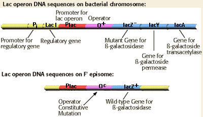

Molecular Genetics of Prokaryotes Problem Set
Problem 8: The Oc mutation of the lac operon
Tutorial to help answer the question
An E. coli strain that is lac Z is conjugated with E. coli cells carrying an F' plasmid with the plac Oc lac Z
is conjugated with E. coli cells carrying an F' plasmid with the plac Oc lac Z DNA sequence on the episome. The Oc is a mutation of the lactose operator that is no longer able to bind the lac I gene product which codes for the lac repressor. How would the expression of the lac Z be regulated in the resulting cells that are diploid for the lactose regulatory region and the lac Z gene?
DNA sequence on the episome. The Oc is a mutation of the lactose operator that is no longer able to bind the lac I gene product which codes for the lac repressor. How would the expression of the lac Z be regulated in the resulting cells that are diploid for the lactose regulatory region and the lac Z gene?
Tutorial
Mutation of the lactose operator
The lac Z gene on the F' DNA is regulated via the operator sequence on the F' DNA. This operator is mutated to an operator constitutive allele. The Oc mutant is unable to bind the lac repressor. The result is constitutive expression of the lac Z gene, and constitutive production of ß-galactosidase even in the absence of the inducer.

Notice from the gene maps in the figure that the conjugated cell is diploid for the regulatory region of the lac operon. There are two alleles of the operator present, including the wild type O allele on the bacterial chromosome and the Oc allele on the F' DNA. The expression of the lac Z gene on the F'-DNA is influenced only by the adjacent operator sequence, and not by the operator on the chromosomal DNA. In genetic terms, the Oc mutation is cis-dominant. Mutations in operator DNA sequences are typically cis-dominant. Why?


University of Arizona
Updated: July 15, 1999
Contact the Development Team
http://www.biology.arizona.edu
All contents copyright © 1998-99. All rights reserved.